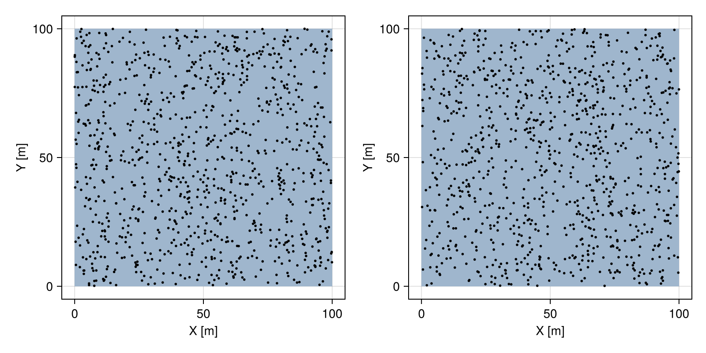
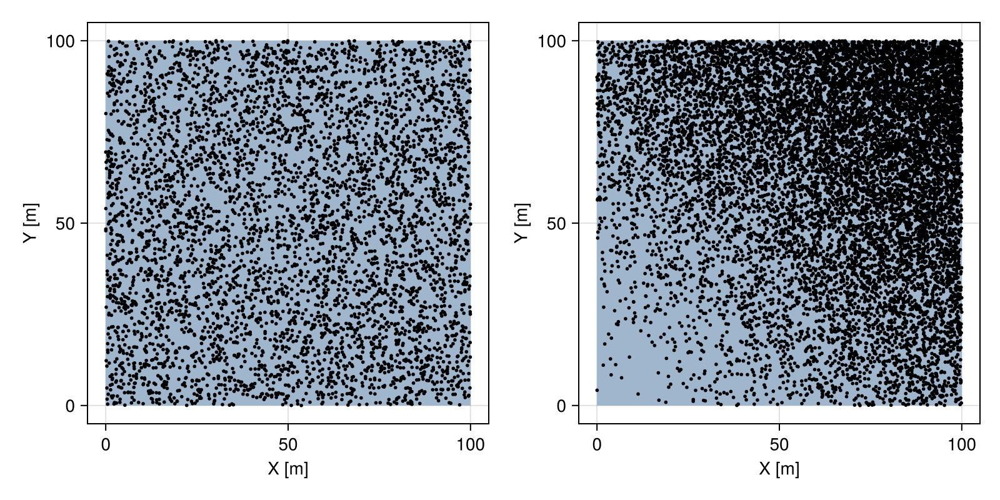
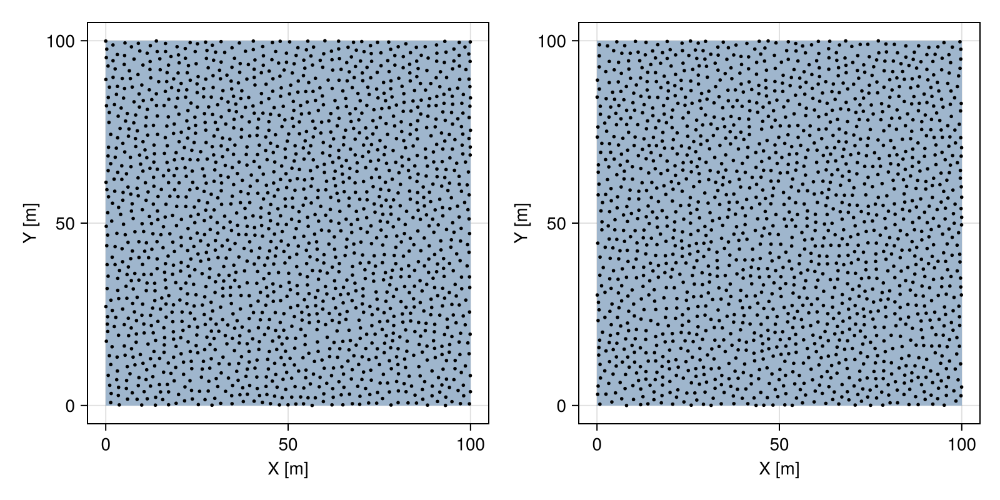
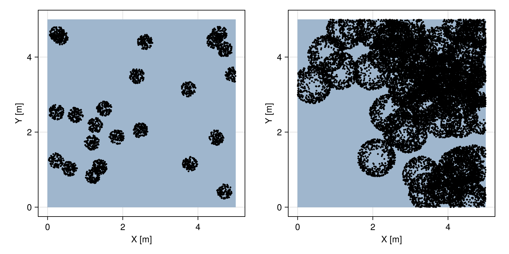

Point processes
Builtin
The following point processes are available upon loading GeoStats.jl
GeoStatsProcesses.BinomialProcess — Type
BinomialProcess(n)A Binomial point process with n points.
# geometry of interest
box = Box((0, 0), (100, 100))
# Binomial process
proc = BinomialProcess(1000)
# sample point patterns
pset = rand(proc, box, 2)
fig = Mke.Figure(size = (800, 400))
viz(fig[1,1], box)
viz!(fig[1,1], pset[1], color = :black)
viz(fig[1,2], box)
viz!(fig[1,2], pset[2], color = :black)
fig
GeoStatsProcesses.PoissonProcess — Type
PoissonProcess(λ)A Poisson process with intensity λ. For a homogeneous process, define λ as a constant real value, while for an inhomogeneous process, define λ as a function or vector of values. If λ is a vector, it is assumed that the process is associated with a Domain with the same number of elements as λ.
# geometry of interest
box = Box((0, 0), (100, 100))
# intensity function
λ(p) = sum(to(p))^2 / 10000
# homogeneous process
proc₁ = PoissonProcess(0.5)
# inhomogeneous process
proc₂ = PoissonProcess(λ)
# sample point patterns
pset₁ = rand(proc₁, box)
pset₂ = rand(proc₂, box)
fig = Mke.Figure(size = (800, 400))
viz(fig[1,1], box)
viz!(fig[1,1], pset₁, color = :black)
viz(fig[1,2], box)
viz!(fig[1,2], pset₂, color = :black)
fig
GeoStatsProcesses.InhibitionProcess — Type
InhibitionProcess(δ)An inhibition point process with minimum distance δ.
# geometry of interest
box = Box((0, 0), (100, 100))
# inhibition process
proc = InhibitionProcess(2.0)
# sample point pattern
pset = rand(proc, box, 2)
fig = Mke.Figure(size = (800, 400))
viz(fig[1,1], box)
viz!(fig[1,1], pset[1], color = :black)
viz(fig[1,2], box)
viz!(fig[1,2], pset[2], color = :black)
fig
GeoStatsProcesses.ClusterProcess — Type
ClusterProcess(proc, ofun)A cluster process with parent process proc and offsprings generated with ofun. It is a function that takes a parent point and returns a point pattern from another point process.
ClusterProcess(proc, offs, gfun)Alternatively, specify the parent process proc, the offspring process offs and the geometry function gfun. It is a function that takes a parent point and returns a geometry or domain for the offspring process.
# geometry of interest
box = Box((0, 0), (5, 5))
# Matérn process
proc₁ = ClusterProcess(
PoissonProcess(1),
PoissonProcess(1000),
p -> Ball(p, 0.2)
)
# inhomogeneous parent and offspring processes
proc₂ = ClusterProcess(
PoissonProcess(p -> 0.1 * sum(to(p) .^ 2)),
p -> rand(PoissonProcess(x -> 5000 * sum((x - p).^2)), Ball(p, 0.5))
)
# sample point patterns
pset₁ = rand(proc₁, box)
pset₂ = rand(proc₂, box)
fig = Mke.Figure(size = (800, 400))
viz(fig[1,1], box)
viz!(fig[1,1], pset₁, color = :black)
viz(fig[1,2], box)
viz!(fig[1,2], pset₂, color = :black)
fig